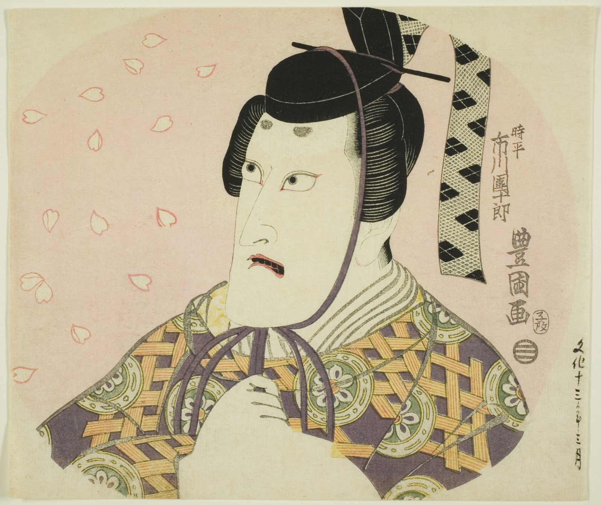

References / Other / 561
Toyokuni I, Ichikawa Danjūrō VII as Fujiwara no Shihei (fan print)
An actor portrait printed to be pasted on a flat round fan (uchiwa-e): Utagawa Toyokuni I sets the actor against a pink fan-shaped ground with falling cherry petals.
- Source
- Art Institute of Chicago, 2000.70
- Creator
- Utagawa Toyokuni I
- Made
- c. 1816
- Style
- Ukiyo-e (agent-proposed, not yet reviewed by a person)
- Moods
- Bold, dramatic, decorative
- Evidence
- Downloaded and inspected the Art Institute of Chicago image of 2000.70 (1686 × 1418 px).
- Reviewed
- Rights
- Open license, stored. License: CC0-1.0. Rights policy
Context
AIC catalogues the sheet as a color woodblock print, uchiwa-e (fan print), 22.9 × 26.8 cm, about 1816, depicting Ichikawa Danjūrō VII in the play Ume Sakura Aioi-zōshi. AIC 2000.70.
Observed
- A rounded fan shape fills the sheet in flat pale pink. The corners outside it are cream paper.
- The actor’s head and shoulders fill the right two thirds. His robe is cut by the lower edge and by the fan outline.
- The robe is purple with an orange and cream lattice and round green flower crests, a dense pattern inside outlined areas.
- The hair and cap are solid black. A ribbon from the cap carries a black diamond pattern.
- Cherry petals are drawn only as red outlines on the pink ground at left.
- The actor’s name, the artist’s signature, and a seal run in vertical columns at right. A date column sits outside the fan at lower right.
Why it belongs
The fan print shows the style on a commercial object: the format is the frame, and the figure is cut by it.
Pattern density changes on purpose: a dense robe, an open pink ground, and a few scattered petals.
Borrow
Use the shape of the object as the frame, and crop the main figure against it.
Set a dense pattern against an open ground with a few scattered outlined motifs.
Measured
Machine-extracted by tools/image-traits.py on . Full measurement.
- Mean chroma
- 0.16
- Palette
- #d5c3a8 51%
- #ddd8bb 18%
- #272720 5%
- #6f625a 4%
- #7b6e64 3%
- #948c6c 2%
- #d0b47a 2%
- #a59d79 2%



is_public_domain: true) and releases images of public-domain works under CC0. AIC open access. Toyokuni I died in 1825, so the work is public domain in Japan and the United States. License: CC0-1.0. Open the image for full size.